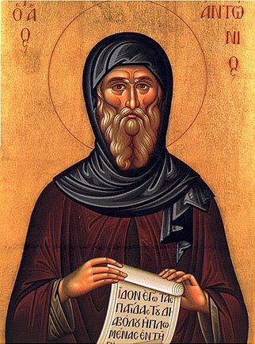

|  |
St. Anthony The GreatFather of Monasticism. Began his path to monasticism where there were no previous fathers to learn from, the Lord our God was his only guide and thus he became a guide to all of us. |
| Dates | Life |
|---|---|
| 251 AD | Born at Coma (Beni Suief), near Heracleopolis Magna in Fayum |
| 270 AD | Withdrew from the world |
| 285 AD | Retire in absolute solitude |
| Whoever you may be, always have God before your eyes. | ★★★★★ |
| Do not worry about the past, but control your tongue and your stomach. | ★★★★★ |
| If we stretch the brethren beyond measure they will soon break. | ★★★★★ |